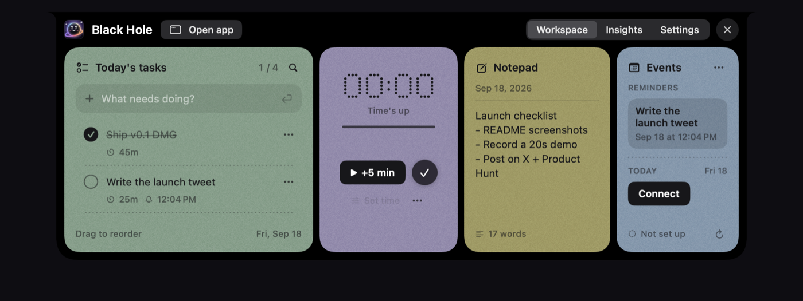
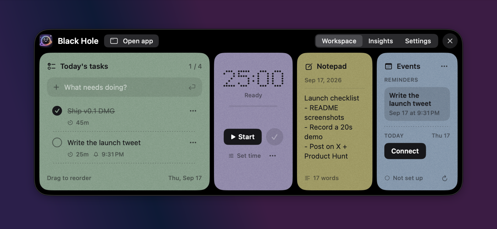
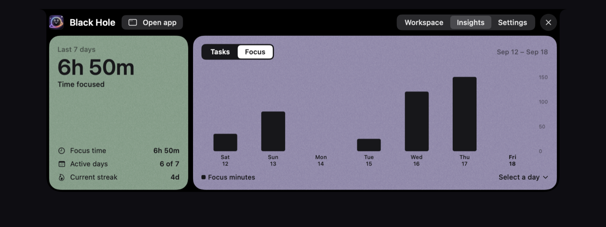
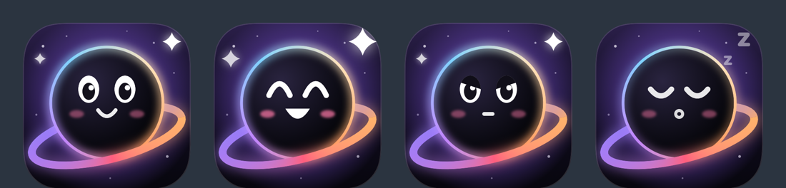

Today's tasks
Add, check off, drag to reorder. Time limits, reminders, move to tomorrow, and unfinished work rolls over on its own.
Drag to reorder
Free · Open source · macOS
Tasks, a focus timer, a daily notepad and today's calendar, living in your Mac's notch.
macOS 14 or later · Apple silicon · no account, no tracking
Try it: click the notch at the top ↑

Add, check off, drag to reorder. Time limits, reminders, move to tomorrow, and unfinished work rolls over on its own.
Drag to reorder
25:00
Countdown or stopwatch. While it runs the notch becomes a live island: progress on one side, time left on the other.
Pauses when your Mac sleeps
Saves as you type. Put the cursor on a line, press ⌘↩, and it becomes a task for today.
17 words
iCloud, Google (as many accounts as you like) and Outlook, colour-coded and read-only. Five minutes before a meeting the notch counts down to it — click to join the call.
Connected
No notch? The workspace opens at the top of the screen instead. On an external monitor, drag the floating button wherever you like and the whole thing opens beside it.

Insights gathers focus time, completed against planned tasks, active days and your streak, so a busy week is easy to look back on.

New in 0.2
Turn on AI access and Black Hole gets its own permanent web address. Paste it into claude.ai, ChatGPT, Claude Code or Cursor, and your assistant can work with your day.
“Add my three most urgent GitHub issues to today”
“Start a 45-minute focus session on the launch post”
“What did I focus on this week?”
Built on the Model Context Protocol · protected by a secret token · your tasks stay on your Mac

He blinks, looks up when you hover, cheers when you finish something, gets serious during a focus session, and dozes off when you've been away.
One download, no sign-up. It lives in your notch from the moment you open it.
Download for MacBuilds aren't notarized by Apple yet, so on first launch open System Settings → Privacy & Security → Open Anyway.